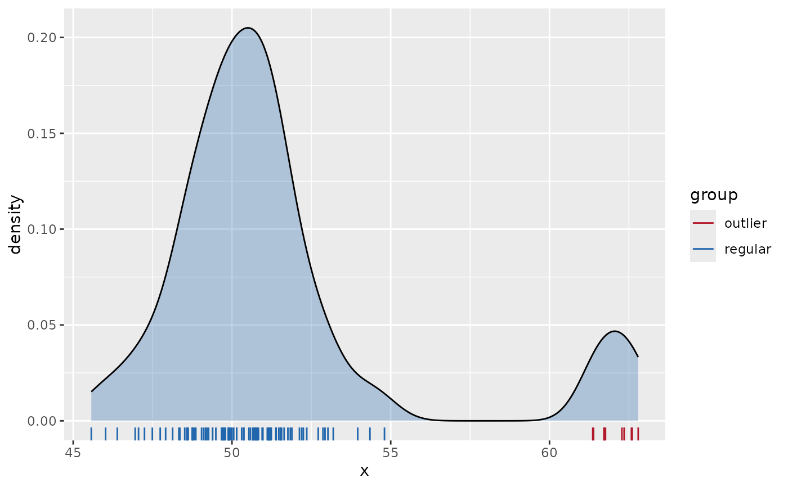

This function calculates classical or robust z-score (standardization) for a numeric vector.
Arguments
- x
A numeric vector.
- cutoff
A numeric value indicating the threshold above which data points are identified and flagged as potential outliers. By default,
cutoff = 3.- robust
A logical value indicating whether to calculate classical or robust z-score. If
FALSE(the default), uses the classical approach. IfTRUE, computes the robust method, i.e. the so-called Stahel-Donoho outlyingness.- drop_na
A logical value indicating whether to remove missing values (
NA) from the calculations. IfTRUE, missing values will be removed. IfFALSE(the default), missing values are kept in the output (with a missing score) and ignored when computing the location and scale.- drop.na
![[Deprecated]](figures/lifecycle-deprecated.svg) Use
Use drop_na.
Value
A tibble with three columns, sorted by decreasing score:
data: The original numeric values.score: The calculated z-scores.flag:TRUEif the corresponding data point is flagged as a potential outlier, andFALSEotherwise.
Details
Z-scores are useful for comparing data points from different distributions because they are dimensionless and standardized. A positive z-score indicates that the data point is above the mean (or the median in the robust approach), while a negative z-score indicates that the data point is below the mean (or the median). One common rule to detect outliers using z-scores is the "three-sigma rule", in which data points with an absolute z-score greater than 3 (|z| > 3) can be considered potential outliers (default), as they fall outside the range that covers 99.7% of the data points in a normal distribution. (Note that a cutoff of |z| > 2.5 is also often used).
References
Rousseeuw, P. J., and Croux, C. (1993). Alternatives to the median absolute deviation. Journal of the American Statistical Association, 88(424), 1273-1283.
Rousseeuw, P. J., and Hubert, M. (2011). Robust statistics for outlier detection. Wiley Interdisciplinary Reviews: Data Mining and Knowledge Discovery, 1(1), 73-79.
Donoho, D., (1982). Breakdown properties of multivariate location estimators. Ph.D. Qualifying paper, Dept. Statistics, Harvard University, Boston.
Stahel, W., (1981). Robuste Schätzungen: infinitesimale Optimalität und Schätzungen von Kovarianzmatrizen. PhD thesis, ETH Zürich.
See also
iqr_outliers(), directional_outlyingness() for skewed data.
Examples
# 90 regular values and a cluster of 10 outliers near 62
set.seed(1)
x <- c(rnorm(90, mean = 50, sd = 2), rnorm(10, mean = 62, sd = 0.5))
group <- rep(c("regular", "outlier"), c(90, 10))
ggplot2::ggplot(data.frame(x, group), ggplot2::aes(x)) +
ggplot2::geom_density(fill = "#2166ac", alpha = 0.3) +
ggplot2::geom_rug(ggplot2::aes(colour = group)) +
ggplot2::scale_colour_manual(values = c(outlier = "#b2182b", regular = "#2166ac"))

# classical: the cluster inflates the standard deviation, which hides it
# (masking): the outliers score below 3 and none is flagged
head(zscore(x), 11)
#> # A tibble: 11 × 3
#> data score flag
#> <dbl> <dbl> <lgl>
#> 1 62.8 2.89 FALSE
#> 2 62.6 2.84 FALSE
#> 3 62.6 2.83 FALSE
#> 4 62.4 2.77 FALSE
#> 5 62.3 2.75 FALSE
#> 6 61.8 2.62 FALSE
#> 7 61.7 2.62 FALSE
#> 8 61.7 2.61 FALSE
#> 9 61.4 2.53 FALSE
#> 10 61.4 2.52 FALSE
#> 11 54.8 0.862 FALSE
# robust: the median and the MAD hardly move, and the 10 outliers are
# flagged
head(zscore(x, robust = TRUE), 11)
#> # A tibble: 11 × 3
#> data score flag
#> <dbl> <dbl> <lgl>
#> 1 62.8 6.67 TRUE
#> 2 62.6 6.57 TRUE
#> 3 62.6 6.56 TRUE
#> 4 62.4 6.43 TRUE
#> 5 62.3 6.39 TRUE
#> 6 61.8 6.11 TRUE
#> 7 61.7 6.09 TRUE
#> 8 61.7 6.08 TRUE
#> 9 61.4 5.90 TRUE
#> 10 61.4 5.89 TRUE
#> 11 54.8 2.29 FALSE
data(forageLIBS)
# iron contents (mg/kg): a few samples are far above the others
fe <- forageLIBS$Fe[!is.na(forageLIBS$Fe)]
head(zscore(fe))
#> # A tibble: 6 × 3
#> data score flag
#> <int> <dbl> <lgl>
#> 1 2060 8.82 TRUE
#> 2 1290 5.16 TRUE
#> 3 1210 4.78 TRUE
#> 4 1190 4.68 TRUE
#> 5 1080 4.16 TRUE
#> 6 1060 4.06 TRUE
head(zscore(fe, robust = TRUE))
#> # A tibble: 6 × 3
#> data score flag
#> <int> <dbl> <lgl>
#> 1 2060 24.5 TRUE
#> 2 1290 14.7 TRUE
#> 3 1210 13.7 TRUE
#> 4 1190 13.4 TRUE
#> 5 1080 12.0 TRUE
#> 6 1060 11.7 TRUE